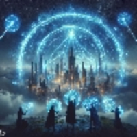

The Cosmere Explored
The Cosmere is a fictional universe created by acclaimed author Brandon Sanderson, serving as the backdrop for many of his epic fantasy novels. It is a vast and intricate setting where various interconnected planets exist, each possessing unique magic systems and distinct cultures. Despite the diversity that exists throughout the Cosmere, there are a few shared elements. These include the Shattering of Adonalsium, the use of intent and investiture, and the presence of worldhoppers.
Adonalsium is a central and enigmatic concept within Brandon Sanderson's Cosmere universe. It is the name given to an all-encompassing, god-like force that existed before the Shattering. The Shattering was an event where a group of individuals, known as the Shards, somehow separated Adonalsium into sixteen distinct, powerful Shards, each representing a particular aspect or intent. These Shards were then taken up by different individuals, turning them into god-like beings themselves, each with their own unique magical powers and motivations. Adonalsium's Shattering and the subsequent distribution of its power play a pivotal role in the overarching narrative of the Cosmere, as characters and events are often influenced by the actions and intentions of these Shardholders. Adonalsium's nature and the consequences of its division remain a central mystery, adding depth and intrigue to the entire Cosmere lore.
The relationship between Intent and Investiture in the Cosmere is a foundational concept that underpins the various magic systems in this fictional universe. Investiture is the magical power that people draw from to perform feats of magic. Intent represents the purpose or driving force behind the use of Investiture, and it is closely tied to the nature and limitations of a Shard's power. The Shards can only wield magic when they align their intent with the ideal they hold. Alternatively, people often have to use an amount of conceptualization to produce powerful magic, which is often mentally straining.

Worldhoppers are individuals or entities in the Cosmere with the unique ability to travel between different planets and realms, connecting the various stories and settings within this vast fictional universe. They possess knowledge of the greater cosmere's cosmology and its fundamental principles, such as Investiture and the sixteen Shards of Adonalsium. This knowledge allows them to understand the nature of magic in different worlds. Worldhoppers, like the enigmatic character Hoid, often make appearances in multiple Sanderson novels, influencing events and adding depth to the interconnected narratives. Their presence enhances the richness and complexity of the Cosmere, providing readers with the joy of discovering hidden connections and Easter eggs that bind together the diverse range of books and series set in this imaginative universe.